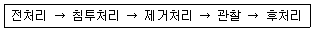
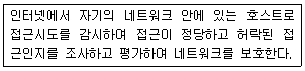
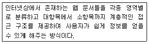

침투비파괴검사기능사 (2008-02-03 기출문제)
1과목: 침투탐상시험법(대략구분)
1. 형광침투탐상 시험장치 중에서 자외선 조사장치가 반드시 필요한 곳으로만 나열된 것은?
- 현상탱크, 침투탱크
- 세척대, 현상탱크
- 침투탱크, 검사대
- 세척대, 검사대
(정답률: 39%)

2. 자외선조사장치는 자외선을 조사하여 지시모양을 뚜렷하게 식별할 수 있는 강도를 갖는 것이어야 하는데 이 때 요구되는 자외선의 파장범위로 가장 적당한 것은?
- 200 ~ 255nm
- 260 ~ 310nm
- 320 ~ 400nm
- 410 ~ 455nm
(정답률: 69%)
3. 다음 중 전원 시설이 없어도 검사가 가능한 비파괴검사법은?
- X선투과검사
- 염색침투탐상검사
- 자분탐상검사
- 중성자투과검사
(정답률: 84%)
4. 다음 중 침투탐상시험시 부적절한 세척에 의하여 가장 놓치기 쉬운 결함은?
- 단조 겹침
- 깊이 패인 결함
- 얕고 넓은 결함
- 예리한 선모양의 표면 균열
(정답률: 53%)
5. 침투탐상시험에서 시험조건에 따른 현상제의 선택이 가장 효과적으로 짝지어진 것은?
- 매우 매끄러운 표면 : 건식현상제가 적당
- 매우 거친 표면 : 습식현상제가 적당
- 소형의 대량작업 : 건식현상제가 적합
- 미세한 균열 검출 : 속건식현상제가 적합
(정답률: 40%)
6. 다음 중 침투탐상검사법의 특징이 아닌 것은?
- 균열이나 불연속의 깊이를 정확하게 측정할 수 있다.
- 대형부품 표면의 현장 검사가 가능하다.
- 미세한 표면 불연속의 검출이 가능하다.
- 제작자가 서로 다른 침투제를 사용할 경우 탐상감도가 감소되는 효과가 발생할 수 있다.
(정답률: 69%)
7. 다른 침투탐상시험과 비교하여 후유화성 형광침투탐상시험의 장점이라고 볼 수 없는 것은?
- 극히 작은 불연속부에 민감하다.
- 깊이가 얕고, 폭이 넓은 결함 검출에 우수하다.
- 거친 표면에 적합하다.
- 눈에 잘 보일 수 있도록 한다.
(정답률: 57%)
8. 침투액이 불연속부에 침투할 때까지 방치하여 둔 시간을 무엇이라 하는가?
- 유화시간
- 적용시간
- 침투시간
- 배수시간
(정답률: 93%)
9. 침투액을 물로 세척할 수 있게 침투액 층의 막을 분산시키는 데 사용되는 물질은?
- 유화제
- 현상제
- 세척제
- 건조제
(정답률: 82%)
10. 와전류탐상시험시 유도된 와전류의 강도가 표면 값의 몇 %로 감소되는 깊이를 표준침투깊이라 하는가?
- 13%
- 37%
- 45%
- 65%
(정답률: 37%)
11. 침투탐상검사로 소형의 양산(量産) 부품, 나사부 등의 예각부를 검사하려고 한다. 다음 중 어떤 시험법을 적용하는 것이 가장 효율적인가?
- 수세성 형광침투탐상시험
- 후유화성 형광침투탐상시험
- 용제제거성 형광침투탐상시험
- 수세성 염색침투탐상시험
(정답률: 41%)
12. 다음 중 수세성 형광침투탐상 시험장치의 배치순서로 옳은 것은?
- 침투조 → 세척조 → 현상조 → 배액대 → 건조대
- 침투조 → 배액대 → 세척조 → 현상조 → 건조대
- 침투조 → 배액대 → 유화조 → 현상조 → 건조대
- 침투조 → 유화조 → 배액대 → 현상조 → 건조대
(정답률: 59%)
13. 침투탐상시험의 침투액에 대한 설명으로 옳은 것은?
- 용제제거성 형광침투액은 대형부품의 전면 동시 검사에 효율적이다.
- 용제제거성 염색침투액은 대형부품의 부분 탐상에 적합하다.
- 용제제거성 형광침투액은 수도시설 및 전원이 필요없다.
- 용제제거성 염색침투액은 인화점이 낮으므로 부품의 탐상에 부적합하다.
(정답률: 53%)
14. 큰 결함과 비교하여 미세한 결함을 검출하고자 할 때 침투시간은 어떻게 하여야 하는가?
- 큰 결함의 침투시간보다 짧게 한다.
- 큰 결함의 침투시간보다 길게 한다.
- 큰 결함의 침투시간과 같게 한다.
- 결함의 크기와 상관없이 항상 1분으로 한다.
(정답률: 79%)
15. 침투탐상시험에서 흰색의 미세한 분말을 휘발성의 유기용제에 분산제와 함께 현탁시킨 현상제?
- 건식현상제
- 습식현상제
- 속건식현상제
- 여과입자분말
(정답률: 38%)
16. 침투탐상시험시 현상법에 따라 건조처리 시기가 다르다. 다음 중 건조처리의 시기가 현상처리 이후인 현상법은?
- 습식현상법
- 무현상법
- 속건식현상법
- 건식현상법
(정답률: 60%)
17. 방사선투과시험에 사용되는 X선의 성질에 대한 설명으로 틀린 것은?
- X선은 빛의 속도와 거의 같다.
- X선은 공기 중에서 굴절된다.
- X선은 전리 방사선이다.
- X선은 물질을 투과하는 성질을 가지고 있다.
(정답률: 64%)
18. 다음 중 시험체 표면에 방청유가 도포된 상태에서도 검사가 가능하며 결과에도 큰 영향이 없는 비파괴검사법은?
- 방사선투과검사
- 자분탐상시험
- 침투탐상시험
- 누설검사
(정답률: 40%)
19. 다음 중 침투탐상 시험결과에서 연속으로 길게 나타나는 결함지시는 어떤 결함인가?
- 기공
- 비금속 개재물
- 균열
- 수축공
(정답률: 75%)
20. 침투탐상시험시 이상적인 현상제로서 갖추어야 할 사항과 거리가 가장 먼 것은?
- 주위 색깔과 구별될 수 있는 색깔이어야 한다.
- 표면에 균일한 도포 막을 형성시켜야 한다.
- 형광침투제 사용시 현상제는 형광물질이어야 한다.
- 결함 부위에서 침투제에 쉽게 젖어야 한다.
(정답률: 75%)
2과목: 침투탐상관련규격(대략구분)
21. 침투탐상시험시 전처리 과정이 중요한 가장 큰 목적은?
- 침투액이 오염된 것을 정화하기 위해서
- 침투액의 세척을 쉽게 하기 위해서
- 현상액의 적용을 빠르게 하기 위해서
- 결함 검출을 용이하게 하기 위해서
(정답률: 68%)
22. 침투탐상시험시 침투제의 역할을 잘못 설명한 것은?
- 미세한 개구부에는 침투제가 스며들지 말아야 한다.
- 증발이나 건조가 너무 빠르게 작용하지 않아야 한다.
- 시험체 표면에 화학 변화를 일으키지 않아야 한다.
- 열이나 빛 등에 노출되어도 색채를 잃지 말아야 한다.
(정답률: 85%)
23. 다음 중 침투탐상시험법에서 전처리를 할 때 일반적은 세척방법은?
- 철솔질
- 연마
- 모래분사
- 용제세척
(정답률: 66%)
24. 다음 물질 중 초음파의 종파속도가 가장 빠른 것은?
- 기름
- 알루미늄
- 황동
- 아크릴수지
(정답률: 55%)
25. 다음 중 장기간 반복 사용에 의하여 발생되는 결함은?
- 피로 균열
- 연삭 균열
- 열처리 균열
- 열간 터짐
(정답률: 74%)
26. 침투탐상 시험방법 및 침투지시모양의 분류(KS B 0816)에서 사용 중인 침투액에 대한 점검결과가 다음과 같을 때 폐기사유에 해당되지 않는 것은?
- 성능시험 결과 결함검출 능력 및 침투지시모양의 휘도가 저하되었을 때
- 성능시험 결과 색상이 변화했다고 인정된 때
- 겉모양 검사를 하여 현저한 흐림이나 침전물이 생겼을 때
- 겉모양 검사를 한 후 불충분한 재료에 정량의 재료로 보충 하여 혼합하였을 때
(정답률: 48%)
27. 항공 우주용 기기의 침투탐상 검사방법(KS W 0914)에서 수세성 침투액 계통의 경우 수동스프레이에 의한 잉여침투액제거 방법에 관한 설명 중 틀린 것은?
- 최대 수압은 275KPa(40psi) 이다.
- 사용하는 수온은 10 ~ 38℃ 이다.
- 스프레이 노즐과 부품사이를 최소 30cm 떨어진 겨냥분사로 한다.
- 물분무 노즐은 감도 레벨 3 또는 레벨 4 의 공정에 대하여만 허용된다.
(정답률: 29%)
28. 침투탐상 시험방법 및 침투지시모양의 분류(KS B 0816)에 따라 다음과 같은 순서로 탐상하는 시험 방법은?

- 용제제거성 형광침투액을 사용한 건식현상법
- 용제제거성 형광침투액을 사용한 무현상법
- 후유화성 염색침투액을 사용한 습식현상법
- 수세성 형광침투액을 사용한 속건식현상법
(정답률: 66%)
29. 침투탐상 시험방법 및 침투지시모양의 분류(KS B 0816)에서 “VC - S” 로 표시된 경우 “C” 에 알맞은 분류는?
- 침투액의 종류
- 현상방법
- 유화제의 종류
- 잉여침투액의 제거방법
(정답률: 82%)
30. 항공 우주용 기기의 침투탐상 검사방법(KS W 0914)에서 건식 현상제로 침투지시모양을 관찰할 때에 현상제의 체류시간 규정으로 옳은 것은?
- 최소 5분 동안 최대 1시간으로 한다.
- 최소 10분 동안 최대 2시간으로 한다.
- 최소 5분 동안 최대 3시간으로 한다.
- 최소 10분 동안 최대 4시간으로 한다.
(정답률: 42%)
31. 항공 우주용 기기의 침투탐상 검사방법(KS W 0914)에서 분류하는 침투액계 중 “타입Ⅱ” 는 무엇을 의미하는가?
- 형광 침투액 계통
- 염색 침투액 계통
- 복식 침투액 계통
- 특수 침투액 계통
(정답률: 36%)
32. 침투탐상 시험방법 및 침투지시모양의 분류(KS B 0816)에규정된 탐상제의 점검 내용으로 옳은 것은?
- 침투액-부착상태 검사
- 유화제-결함검출 능력 검사
- 건식현상제-겉모양 검사
- 습식현상제-세척성 검사
(정답률: 47%)
33. 항공 우주용 기기의 침투탐상 검사방법(KS W 0914)에서 탐상시의 재료 및 공정의 제한에 관한 내용으로 틀린 것은?
- 염색침투액계의 탐상시 수용성의 현상제는 사용해서는 안된다.
- 염색침투탐상검사는 항공우주용 제품의 최종 수령검사에 이용해서는 안된다.
- 동일한 검사면에 사용되는 형광침투탐상검사는 염색침투탐상검사 전에 사용해서는 안된다.
- 터빈 엔진의 중요 구성부품 정비검사는 친수성 유화제를 사용하는 초고감도 형광침투액을 사용한다.
(정답률: 56%)
34. 항공 우주용 기기의 침투탐상 검사방법(KS W 0914)에서 탐상검사 시, 구성 부품에 건조를 실시하는 시기로 틀린 것은?
- 수용성 현상제를 사용시는 적용 후 건조 실시
- 건식 분말 현상제를 사용시는 적용 후 건조 실시
- 비수성(속건식) 현상제를 사용시는 적용 전 건조 실시
- 현상제를 사용하지 않을 때는 검사 전 건조 실시
(정답률: 36%)
35. 침투탐상 시험방법 및 침투지시모양의 분류(KS B 0816)에서 샘플링검사인 경우 합격한 로트의 모든 시험체에 대한 표시방법으로 옳은 것은?
- ⓟ 의 기호로 각인 또는 적갈색으로 착색
- ⓟ 의 기호로 각인 또는 황색으로 착색
- 적갈색으로 착색 또는 적갈색 밴드 부착
- 노란색으로 착색 또는 노란색 밴드 부착
(정답률: 66%)
36. 침투탐상 시험방법 및 침투지시모양의 분류(KS B 0816) 에 의한 유화제의 적용 방법으로 가장 적절하지 않은 것은?
- 분무
- 붓기
- 침지
- 솔질
(정답률: 82%)
37. 침투탐상 시험방법 및 침투지시모양의 분류(KS B 0816)에 의한 표시기호 “FB-A” 의 탐상 순서로 옳은 것은?
- 전처리 → 침투처리 → 유화처리 → 세척처리 → 현상처리 → 건조처리 → 관찰 → 후처리
- 전처리 → 침투처리 → 예비세척처리 → 유화처리 → 세척처리 → 건조처리 → 현상처리 → 관찰 → 후처리
- 전처리 → 침투처리 → 세척처리 → 건조처리 → 현상처리 → 관찰 → 후처리
- 전처리 → 침투처리 → 제거처리 → 현상처리 → 관찰 → 후처리
(정답률: 43%)
38. 침투탐상 시험방법 및 침투지시모양의 분류(KS B 0816)에 따라 결함을 분류할 때 “정해진 면적 안에 존재하는 1개 이상의 결함”을 무엇이라 하는가?
- 연속 결함
- 선상 결함
- 분산 결함
- 원형상 결함
(정답률: 45%)
39. 주강품-침투탐상검사(KS D ISO 4987)에 따른 불연속지시에 대한 설명으로 잘못된 것은?
- 불연속지시는 선형 지시 또는 연결형 지시, 비선형(군집)지시 등으로 분류한다.
- 불연속지시의 치수는 불연속의 실제 치수를 직접 나타내지는 못한다.
- 불연속지시는 7등급의 엄격도로 분류한다.
- 불연속지시 중 선형 지시는 길이 최대 치수가 폭 최소 치수의 2배 이상인 것이다.
(정답률: 30%)
40. 침투탐상 시험방법 및 침투지시모양의 분류(KS B 0816)에규정된 “침투시간”을 바르게 설명한 것은?
- 침투시간은 침투액의 종류에 관계없이 일정하게 적용한다.
- 침투시간은 온도 10 ~ 40℃ 의 범위에서는 규정된 침투시간을 표준으로 한다.
- 침투시간은 검출하여야 할 결함의 종류에 관계없이 일정하게 적용한다.
- 침투시간은 시험체의 재질, 시험체의 온도 등을 고려하여 정한다.
(정답률: 66%)
3과목: 금속재료일반 및 용접일반(대략구분)
41. 컴퓨터시스템에서 예기치 모한 일이 발생하였을 때, 현재하던 일을 멈추고, 다른 작업을 처리하도록 하는 것을 무엇이라 하는가?
- 스풀링(spooling)
- 인터럽트(interrupt)
- 스케줄링(scheduling)
- 페이징(paging)
(정답률: 32%)
42. 다음이 설명하고 있는 것은?

- 해킹
- 방화벽
- 크래킹
- 잠금장치
(정답률: 65%)
43. 다음이 설명하고 있는 웹페이지 검색 방식은?

- 웹 인덱스 방식
- 키워드 검색방식
- 웹 디렉토리 방식
- 메타형 검색방식
(정답률: 40%)
44. 사용자가 웹 서버의 하이퍼텍스트 문서를 볼 수 있게 해주는 클라이언트 프로그램을 무엇이라 하는가?
- 웹 브라우저
- 운영체제
- 워드프로세서
- 오라클
(정답률: 38%)
45. 하나의 사무실, 건물, 대학, 연구소 내의 근거리에 있는 컴퓨터들과 주변장치들을 연결하여 데이터를 주고 받을 수 있도록 구성된 근거리 통신망은?
- MAN
- WAN
- LAN
- SAN
(정답률: 59%)
46. 축각이 α = β = γ = 90° , 축의 길이는 a = b ≠ c 로 이루어진 격자는?
- 단사정계
- 사방정계
- 입방격자
- 정방격자
(정답률: 22%)
47. 수은을 제외한 금속재료의 일반적 성질을 설명한 것 중 옳은 것은?
- 금속은 상온에서 결정체이다.
- 순수한 금속일수록 열전도율은 떨어진다.
- 합금의 전기 전도율은 순수한 금속보다 좋다.
- 이온화 경향이 작은 금속일수록 부식되기 쉽다.
(정답률: 67%)
48. 다음 중 재료의 연성을 알기 위한 시험법은?
- 란쯔 시험
- 조미니 시험
- 마크로 시험
- 에릭슨 시험
(정답률: 34%)
49. 다음 중 주철이 성장하는 원인에 속하지 않는 것은?
- 시멘타이트의 흑연화에 의해
- 펄라이트 조직 중의 Si 의 환원에 의해
- 흡수된 가스의 팽창에 따른 부피 증가 등에 의해
- A1 변태점 이상의 온도에서 장시간 방치되어 부피 증가에 의해
(정답률: 17%)
50. 강에 대한 망간(Mn)의 영향이 아닌 것은?
- 담금질이 잘 된다.
- 점성증가, 고온가공이 용이하다.
- 적열메짐의 원인이 되는 원소이다.
- 고온에서 결정성장을 감소시킨다.
(정답률: 54%)
51. 다음 중 금속의 응고에 대한 설명으로 틀린 것은?
- 냉각 곡선은 시간에 대한 온도변화를 나타낸 곡선이다.
- 액체 금속이 응고시 응고점보다 낮은 온도에서 응고하는 것을 과냉이라 한다.
- 결정 입자의 크기는 핵 생성 속도가 핵 성장 속도보다 빠르면 입자는 조대화 된다.
- 용융 금속이 응고시 작은 결정을 만드는 핵을 중심으로 나뭇가지 모양으로 발달한 것을 수지상 결정이라 한다.
(정답률: 44%)
52. 다음 중 Ni 을 함유한 합금이 아닌 것은?
- 인바(Invar)
- 엘린바(Elinvar)
- 플레티나이트(Platinite)
- 문쯔 메탈(Muntz metal)
(정답률: 45%)
53. 다음 중 강도와 경도가 가장 큰 조직은?
- 마텐자이트(martensite)
- 오스테나이트(austenite)
- 페라이트(ferrite)
- 펄라이트(pearlite)
(정답률: 32%)
54. 다음 중 크리프(creep)에 대한 설명으로 옳은 것은?
- 제1기 크리프를 가속 크리프라 한다.
- 제2기 크리프를 감속 크리프라 한다.
- 제3기 크리프를 정상 크리프라 한다.
- 재료에 일정한 응력을 가하고, 어떤 온도에서 변형량의 시간적 변화를 크리프라 한다.
(정답률: 65%)
55. 금속간 화합물인 탄화철(Fe3C) 중의 Fe 의 원자비(%)는?
- 25
- 45
- 65
- 75
(정답률: 33%)
56. 금속을 냉간 가공하면 결정입자가 미세화되어 재료가 단단해지는 현상은?
- 가공경화
- 열간연화
- 청열메짐
- 조직의 열화
(정답률: 68%)
57. 주물용 Al-Si 합금 용탕에 0.01% 정도의 금속나트륨을 넣고 주형에 용탕을 주입함으로써 조직을 미세화시키고 공정 점을 이동시키는 처리는?
- 용체화처리
- 개량처리
- 접종처리
- 구상화처리
(정답률: 65%)
58. 용접기의 종류(용량) 표시에 사용된 기호가 AW 250 이란 표시가 있을 때 여기에서 250은 무엇을 뜻하는가?
- 정격 2차 전류
- 정격 사용률
- 2차 최대 전류
- 2차 무부하 전압
(정답률: 40%)
59. 다음 용접의 종류 중 압접에 속하는 것은?
- 티그(TIG) 용접
- 서브머지드 용접
- 점 용접
- 일렉트로 슬래그 용접
(정답률: 43%)
60. 가스용접에서 용해아세틸렌 취급시 주의사항으로 틀린 것은?
- 저장실의 전기 스위치, 전등 등은 방폭 구조여야 한다.
- 저장 장소에서 화기를 가까이 하지 말아야 한다.
- 저장 장소는 밀폐된 곳이어야 한다.
- 용기는 진동이나 충격을 가하지 말고 신중히 취급해야 한다.
(정답률: 77%)